Surgical Tissue Worlds
Archie McMurray · Hamlyn Centre, Imperial College London · supervised by Tobias Czempiel and Daniel S. Elson
MRes thesis (2026), Hyperspectral Tissue Worlds for Synthetic Surgical Data, and follow-on work in preparation for IPCAI 2027. Quantitative results and code will be released with the paper.
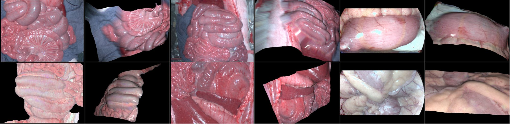
Motivation
Surgical hyperspectral imaging resolves tissue composition beyond what RGB cameras capture, but labelled acquisitions are few, and the variation that matters in practice (viewpoint, tissue motion, illumination, wet reflection, physiology) is rarely recorded under control. Conventional augmentation only warps the image in 2-D, generative models need the training data that is missing, and fully simulated scenes offer control but do not look or measure like real tissue.
This work takes a different route. It lifts a single real frame into a 3-D scene that keeps the measured appearance, and then generates controlled variation around it. Because every rendered pixel is tied to a source pixel, labels and correspondences are known by construction rather than estimated.
From one frame to a 3-D world
Specular highlights are detected and repaired across all spectral bands, and spatial shading is removed so that the stored texture reflects the tissue rather than the light source. A monocular geometry model predicts depth and surface normals, and the frame is lifted to a mesh in which every vertex keeps its source coordinates. The measured spectrum and any annotation therefore travel with the surface, and no appearance is synthesised.
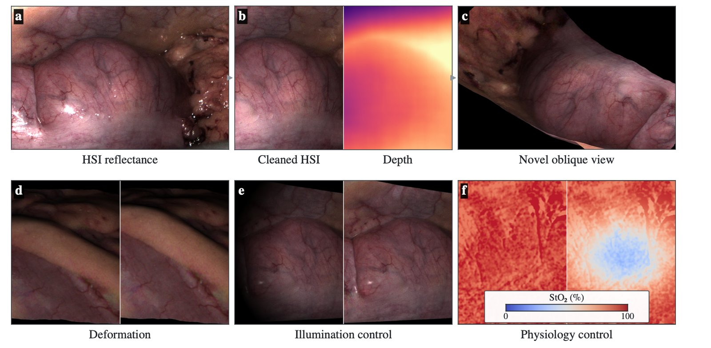
Controlled variation
Once a frame is a surface, the factors that are entangled in real data can be varied one at a time while correspondences and labels remain exact.
Viewpoint
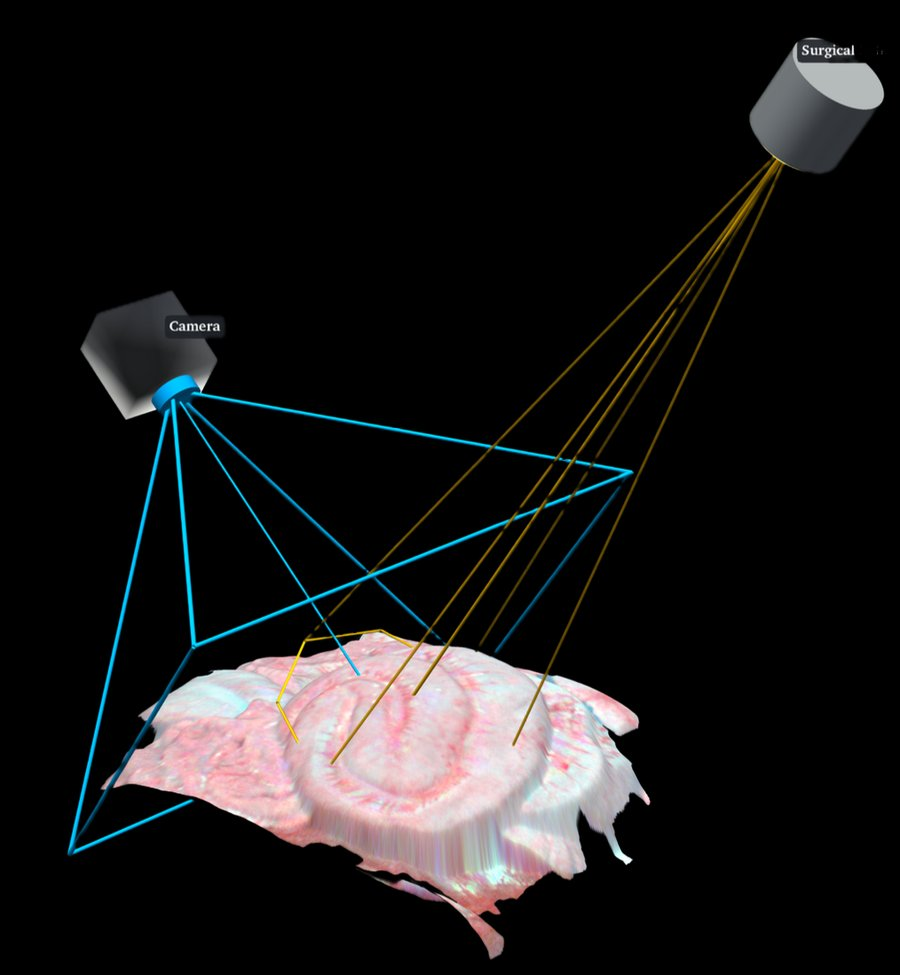
Deformation
Illumination and reflection
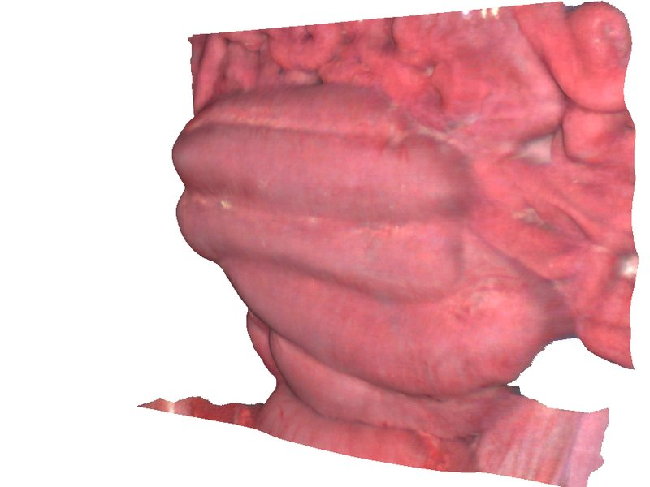
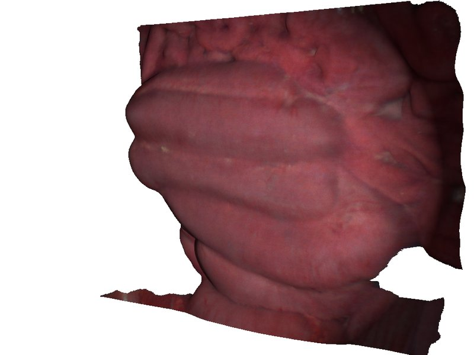
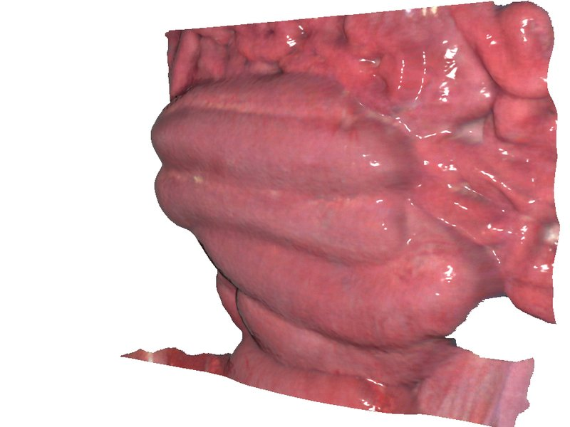
Physiology
A three-layer tissue model and a neural reflectance surrogate are used to estimate how the measured spectrum would change with blood volume and oxygen saturation. The change is applied as a relative multiplier on the measured spectrum, either globally or within a chosen region.
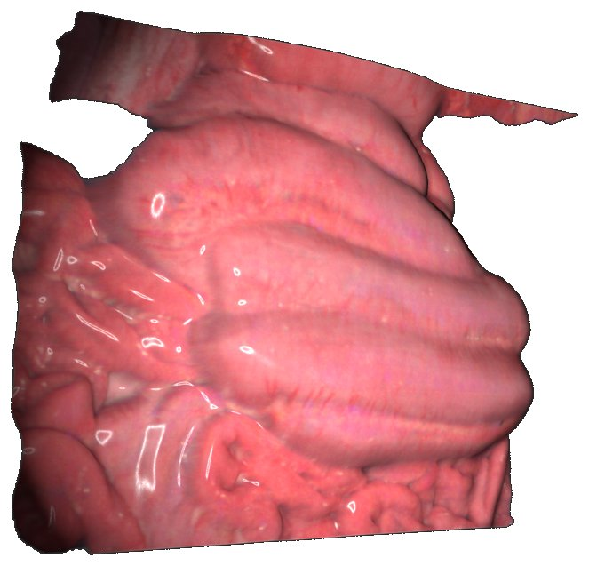
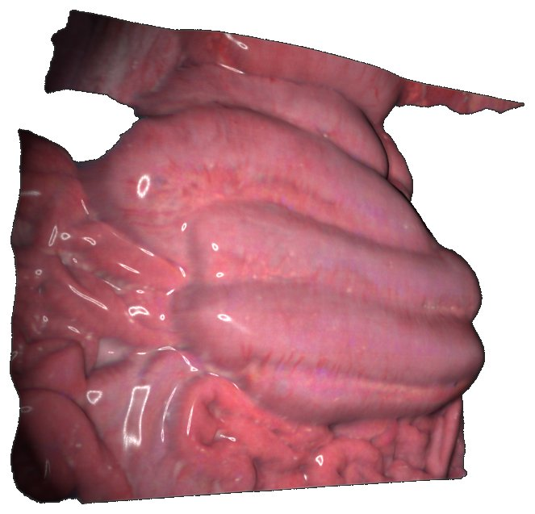
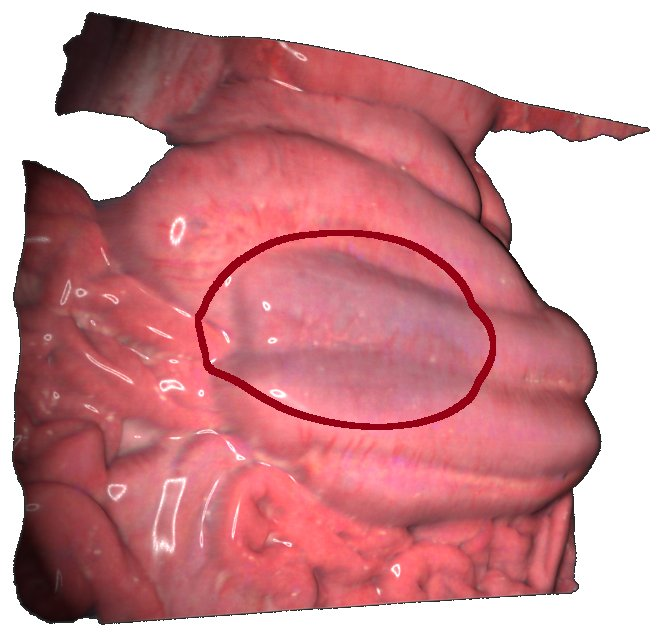
Learning from worlds
Rendered views provide supervision that real video cannot: exact sub-pixel correspondences, visibility masks and transported labels. The thesis evaluated the worlds as training data for colon segmentation on held-out animals and for hyperspectral keypoint matching with HyKey. The current work extends the approach to RGB and hyperspectral laparoscopy and uses it in three ways: as pairs for dense self-supervised pretraining before few-label organ segmentation on DSAD, as training pairs for keypoint matchers, and as a validation target by predicting real views of the same scene at known camera poses.
Every experiment is compared against a matched homography: a planar warp fitted to the same camera motion and covering the same region. Any difference between the two is therefore due to 3-D parallax rather than to the amount or kind of augmentation.
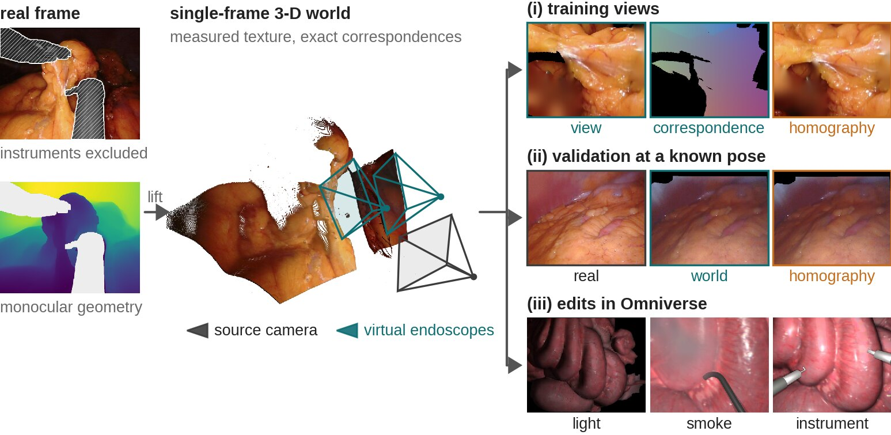
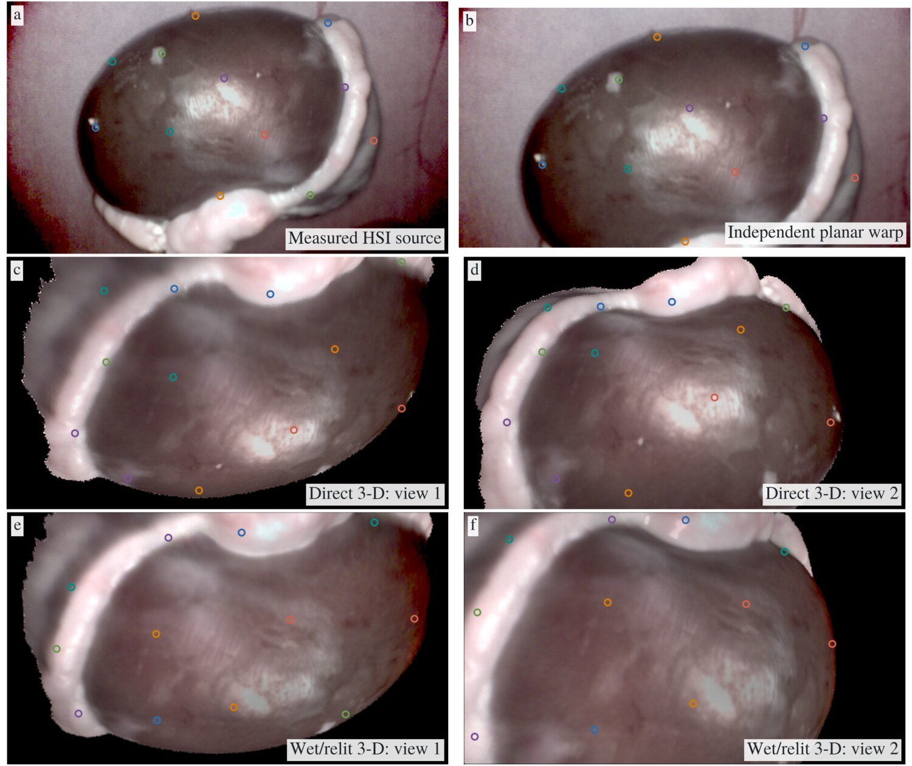
Editing real scenes
Worlds are exported as USD scenes and open in an NVIDIA Omniverse extension, where a real acquisition can be inspected from any angle and edited with scope lighting, surgical smoke or inserted instruments. Because the underlying scene is real, these edits give controlled stress tests for trained models on real anatomy rather than on a synthetic proxy.
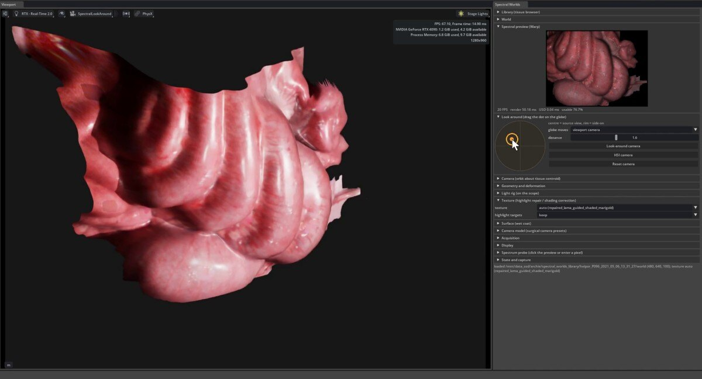
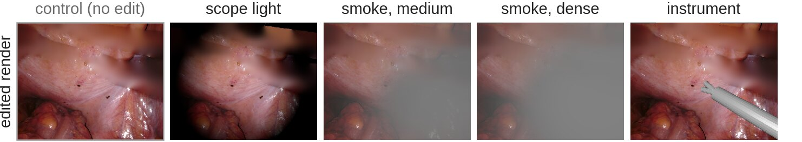
Data
Porcine open-surgery hyperspectral acquisitions (HeiPorSPECTRAL, Xeno-learning), human minimally invasive hyperspectral data from Enacuity, the HyKey hyperspectral matching data, and RGB laparoscopy from DSAD, StereoMIS, STIR and SERV-CT.